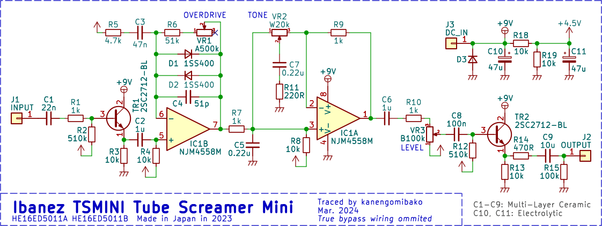

Ibanez TSMINI Tube Screamer Mini 解析
2024年04月08日 カテゴリー：修理・改造・解析
Ibanez TS9に引き続き、最新のTSMINIについても調査しました。
2015年にトレースされたTSMINIは、R10とR11の抵抗値がTS9と異なっていました。このブログ記事やこいちさんのポストの個体でも異なっているのが確認できます。トーンポットがBカーブなのでそれに合わせて変えたのかもしれませんが、R11を1kΩに変えてもトーンの可変幅が狭くなるだけです。また、R10を220Ωにする意味もあまりないため、何らかのミスでR10とR11の値が入れ替わったという可能性が高いように思います。そしてZZZTopさんのポストの個体では元に戻されているのが確認できます。
過去にはIbanez ADMINIで、バイパス経路にコンデンサが付いているという問題が報告されています（下記ページ参照）。
・IBANEZ ANALOG DELAY MINI ADminiの修理
▽回路図

トーンポットはWカーブで、他の値もTS9と同じです。タンタルコンデンサは使われなくなり、電源部以外は積層セラミックコンデンサ（MLCC）です。
周波数特性を確認すると、TS9とは少しズレていました。
原因は主にC5とC7で、これらをフィルムコンデンサに変更すると、理想的周波数特性に近くなりました。1.0mm×0.5mm（1005Mサイズ）という小さな高誘電率系MLCCなので、DCバイアスによる容量減少が大きくなっていると考えられます。
・参考ページ→村田製作所 コンデンサガイド 静電容量の電圧特性
今回の調査を踏まえると、少なくとも3種類のTSMINIが存在するといえます。
・初期型：R10とR11の抵抗値がTS9と異なる、トーンの可変幅が小さい
・中期型：R10とR11の抵抗値が修正されている、TS9とほぼ同じ
・後期型：コンデンサの種類が変更されている、高音域が出やすい
残念ながら外観やシリアル番号で判別する方法はないようです。